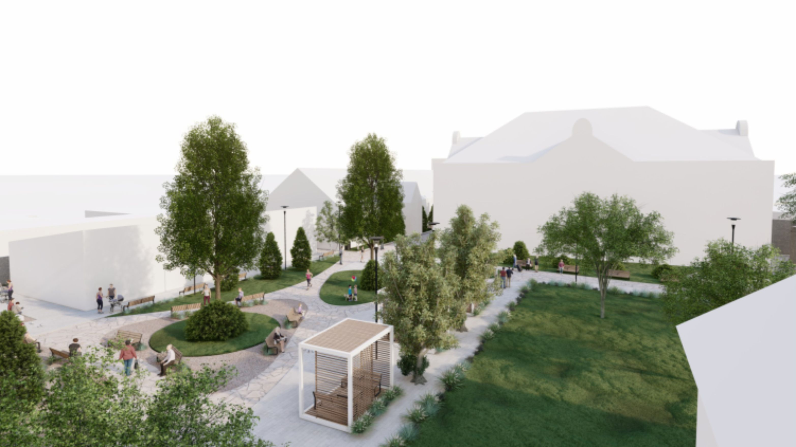
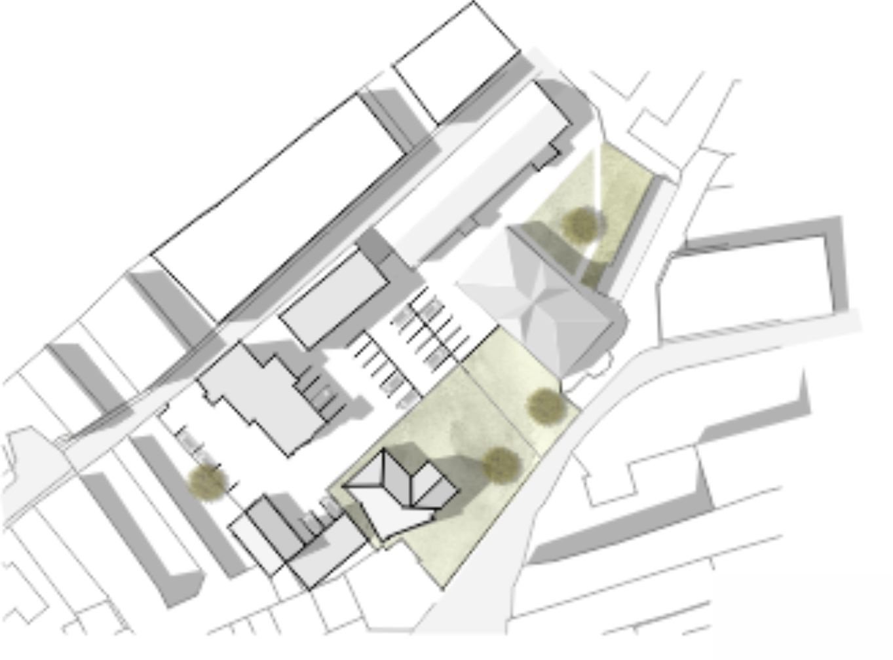
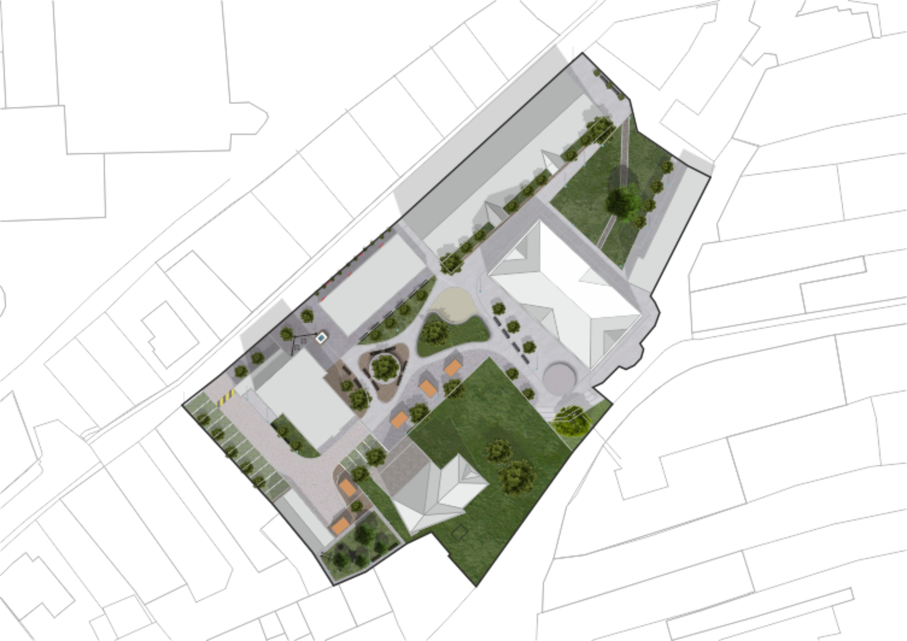
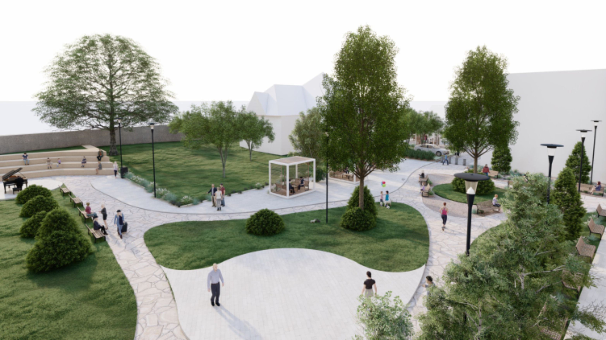
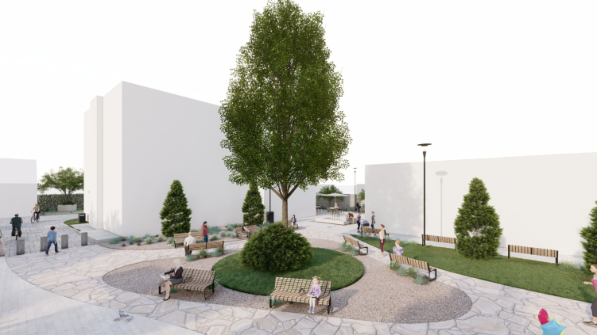

VÍZIE
Cieľom návrhu je zvýšenie kvality verejného priestoru a pritiahnutie života do suburbia. Zónovaním definujeme oddychovo-relaxačnú časť s prechodnou, performatívnou, ale aj detskou zónou či priestorom na letné terasy spojeným s plánovanými funkciami konkrétnych budov suburbia. Otváraním nových priehľadov ponúkame dostatočne reprezentatívny priestor, ktorý má potenciál pritiahnuť do priestorov suburbia domácich návštevníkov, ale aj turistov. Obnovu vnútorných priestorov vytvárame s ohľadom na súčasné trendy v urbanizme. Osobitný dôraz kladieme na dostatočnú presvetlenosť areálu, čím predchádzame tvorbe nebezpečných tmavých zákutí. Pri návrhu dbáme na historické súvislosti, pamiatkovú hodnotu jednotlivých budov, ako aj základné požiadavky a vízie využívania verejného priestranstva.



